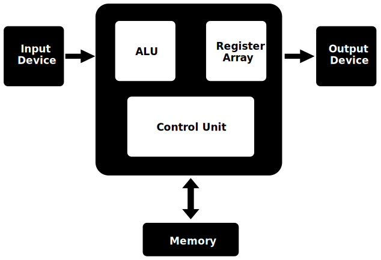
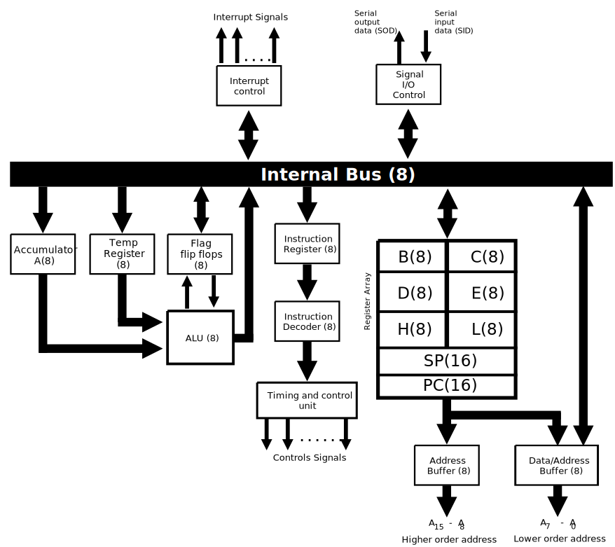
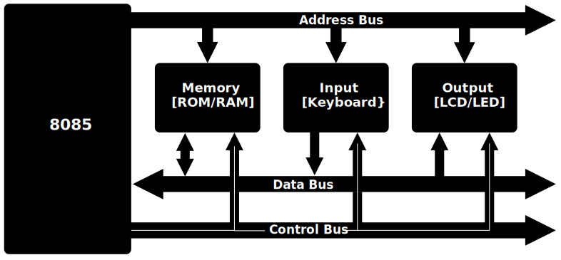

Introduction to Microprocessor
- A microprocessor is a central processing unit (CPU) integrated onto a single chip.
- It serves as the brain of a computer system, executing instructions and performing calculations to enable the functioning of various applications.
- Microprocessors are fundamental components in modern electronic devices, powering not only computers but also a wide range of embedded systems, from household appliances to automotive control systems.
- Key features and characteristics of microprocessors include their clock speed, architecture, instruction set, and the ability to process data and execute instructions stored in memory.
- They play a crucial role in the overall performance and capabilities of a computing system.
- As technology has advanced, microprocessors have become increasingly powerful, smaller in size, and more energy-efficient.
- This continuous evolution has led to improvements in computing speed, efficiency, and the ability to handle complex tasks.
Don't get confused between microprocessor, microcontroller, microcomputer, and mainframe
- A microprocessor has memory on a separate chip, making it distinct from a microcontroller.
- Microprocessors are advantageous as they allow for flexibility in memory configuration and expansion.
- In contrast, a microcontroller integrates all components, including memory, onto a single chip, providing a compact and integrated solution suitable for specific applications.
- Microcomputers, encompassing a broader category, refer to complete computer systems that are smaller in scale compared to mainframes.
- Mainframes, in contrast, are powerful computers designed for large-scale data processing and handling critical business applications.
Basic Block Diagram of Microprocessor
The above diagram contains:
- Input device: This component facilitates the entry of data into the microprocessor, allowing it to process information from external sources.
- Output device: Responsible for presenting the processed data or results in a usable form to the user or other parts of the system.
- ALU (Arithmetic Logic Unit): The ALU performs mathematical and logical operations, crucial for executing instructions and processing data within the microprocessor.
- Register Array: A set of registers that store and quickly provide access to temporary data during the execution of instructions.
- Control Unit: This unit manages and coordinates the operations of various components within the microprocessor, ensuring proper execution of instructions.
- Memory: Stores both data and instructions for the microprocessor to access and utilize during its operation.
Basic Steps Followed by Microprocessor
Before executing any instruction, the microprocessor needs to know where to find the data or operation to be performed. This step involves determining the memory location or register address of the instruction to be processed.
- Fetch:
- Decode:
- Execute:
Once the address is determined, the microprocessor fetches the instruction from the specified memory location. This involves retrieving the binary code representing the instruction and bringing it into the processor's memory for further processing.
After fetching the instruction, the microprocessor decodes the binary code. This step involves interpreting the instruction to understand what operation needs to be performed and which data is involved. The microprocessor determines the specific sequence of actions required for execution.
With the instruction decoded, the microprocessor performs the actual operation or manipulates the data according to the instruction's requirements. This step completes the execution cycle, and the result may be stored back in memory or sent to other components for further processing.
Broadly, There Are Two Types of Microprocessors
- General Purpose Microprocessor:
- Special Purpose Microprocessor:
General-purpose microprocessors are versatile and designed to handle a wide range of tasks. They are commonly found in personal computers, laptops, and servers. These processors are capable of executing various instructions and performing tasks such as data processing, arithmetic calculations, and running a variety of applications. General-purpose microprocessors provide flexibility for diverse computing needs.
Special-purpose microprocessors are designed for specific applications or dedicated tasks. Unlike general-purpose processors, they are optimized to excel in particular functions. Examples include microprocessors embedded in devices like washing machines, microwave ovens, or digital cameras, where their design is tailored to efficiently perform the specific tasks associated with the device's functionality. Special-purpose microprocessors are often more power-efficient and cost-effective for their designated applications.
Evolution of Microprocessor
- The evolution of microprocessors marks a remarkable journey in the field of computing, shaping the landscape of technology over the past several decades. The inception of microprocessors can be traced back to the early 1970s, a period that witnessed the advent of the first commercially available microprocessor, the Intel 4004. This groundbreaking development laid the foundation for a transformative era in computing, transitioning from large, room-sized mainframes to compact, versatile microprocessors that could be integrated onto a single chip. Since then, relentless advancements in semiconductor technology, architecture design, and manufacturing processes have propelled microprocessors to unprecedented levels of performance, efficiency, and functionality. This evolution has not only fueled the exponential growth of computing power but has also revolutionized industries, from personal computing to embedded systems, contributing to the interconnected digital world we navigate today. This exploration into the evolution of microprocessors will delve into key milestones, technological breakthroughs, and the enduring impact these tiny yet powerful components have had on shaping the modern technological landscape.
The following table illustrates various stages of integration in microprocessor and computer development.
Note:
- IC (Integrated Circuit): A semiconductor device that integrates multiple electronic components (such as transistors, resistors, and capacitors) into a single package.
- Flips (Flip-Flops): Digital circuits used for storing binary information. The number of flips or flip-flops in a design depends on the specific requirements of the circuit, such as memory or sequential logic functions. The count can vary widely based on the complexity of the integrated circuit.
Intel Microprocessor Evolution
- The bit size of an ALU indicates how many binary digits it can process in a single operation. The higher the bit size, the more information the ALU can handle at once, providing greater computational capabilities. This is a crucial factor in determining the processing power and efficiency of a microprocessor.
- Dual-core signifies that 41 million transistors are present on a single side. In the case of a
dual-core
processor, there would be a total of 41 million * 2 transistors, accounting for both cores.
Quad-core signifies the presence of 41 million transistors on a single side. In a quad-core processor, the total number of transistors would be 41 million * 4, considering all four cores.
Similarly, octa-core implies 41 million transistors on a single side. In an octa-core processor, the overall number of transistors would be 41 million * 8, accounting for all eight cores.
Motorola 6800 Series
- The Motorola 6800 Series is a family of microprocessors developed by Motorola in the 1970s.
- It was one of the early microprocessor families widely used in various applications, including early personal computers, industrial control systems, and embedded systems.
- Key features of the Motorola 6800 Series include:
- Instruction Set: The 6800 series had a rich instruction set with a wide range of operations, making it versatile for different applications.
- Architecture: It utilized an 8-bit data bus and had a 16-bit address bus, allowing it to address up to 64 KB of memory directly.
- Registers: The 6800 series included several registers, including an accumulator, index registers, and a stack pointer, providing flexibility and efficiency in programming.
- Interrupts: It supported interrupt handling, allowing external devices to interrupt the processor's normal execution flow for time-critical tasks.
- Clock Speed: The clock speed of the 6800 series varied across different models, ranging from a few hundred kilohertz to several megahertz.
- The Motorola 6800 Series had several popular members, including:
- 6800: The original member of the series, introduced in 1974, with a focus on embedded systems and early computer applications.
- 6809: A more advanced version introduced later with enhanced features, including additional addressing modes and instructions.
- 68000: While not part of the 6800 series, the 68000 microprocessor family, introduced by Motorola in the early 1980s, was a significant evolution with 32-bit architecture and became widely used in the development of personal computers and workstations.
- The Motorola 6800 Series played a significant role in the development of microprocessor technology and paved the way for further advancements in computing and embedded systems.
Introduction to the 8085 Microprocessor
The Intel 8085 microprocessor, introduced in 1976, is an 8-bit microprocessor that played a significant role in the early development of personal computers and embedded systems. With a clock speed of 3 MHz, it became a popular choice for various applications due to its versatility and reliability.
Features of the 8085 Microprocessor
- 8-Bit Microprocessor: The 8085 is an 8-bit microprocessor, meaning its Arithmetic Logic Unit (ALU) can process data in 8-bit chunks, providing versatility in handling various computational tasks.
- 8-Bit Bidirectional Data Bus: It features an 8-bit bidirectional data bus, allowing seamless communication between the microprocessor and other connected devices for efficient data transfer.
- 8-Bit Unidirectional Address Bus: The 8085 utilizes an 8-bit unidirectional address bus, enabling it to address specific memory locations for reading or writing data during the execution of instructions.
- Maximum Addressable Memory Space: The microprocessor can address a maximum memory space of 64 kilobytes (64 KB), facilitating access to a broad range of memory locations for storing and retrieving data.
- Operating Clock Frequency: With an operating clock frequency of 3 MHz, the 8085 executes instructions at a rapid pace, contributing to its efficiency in processing data and performing various operations.
- Input and Output Ports: The 8085 microprocessor supports the connection of 256 input and 256 output ports, each identified by an 8-bit port address. This feature enhances its capability to interface with external devices and peripherals.
- Total Number of Op Codes: The instruction set of the 8085 microprocessor comprises a total of 256 op codes. Examples include operations like ADD (addition) and INR (increment), providing a diverse range of instructions for programming and executing various tasks.
Calculation of Addressable Memory Space
Addressable memory space refers to the range of memory locations that a computer system can uniquely identify and access. The calculation of addressable memory space involves determining the maximum number of unique addresses that can be generated by the system.
Key Factors in Addressable Memory Space Calculation:
- Address Bus Width: The number of lines in the address bus determines the maximum number of unique addresses that can be represented. A wider address bus allows for a larger addressable memory space.
- Addressability: The unit of addressability, often expressed in bits, indicates the smallest addressable storage unit. For example, if the addressability is 8 bits, each address points to a byte of memory.
- Formula: The addressable memory space (N) can be calculated using the formula N = 2(Address Bus Width).
Example:
If a computer system has a 16-bit address bus, the addressable memory space would be 2^16, resulting in
64 kilobytes (KB) of addressable memory.

Note: 210 = K, 220 = M and so on.
Internal Architecture of 8085:
- When an instruction is fetched from memory, it is stored in the instruction register (IR). The instruction decoder then interprets this opcode to determine the operation to be performed.
- The instruction decoder communicates the operation details to the timing and control unit, which generates the necessary control signals to execute the instructions.
- For arithmetic and logical operations, one operand is typically fetched from the accumulator (A), while the other operand is fetched from a temporary register (Temp Register) by the Arithmetic Logic Unit (ALU). The ALU processes this data, and the result is usually stored back in the accumulator, affecting the status flags based on the ALU outcome.
- For example, consider the instruction ADI 45H. The opcode ADI is fetched into the instruction register and decoded by the instruction decoder. Subsequently, the timing and control unit generates a signal to fetch the next byte of the instruction, which in this case is the data value 45H. This data is then loaded into the temporary register for processing by the ALU, and the result is stored back in the accumulator.
8085 Pin Diagram
Lets discuss about pins in the above diagram
Power Supply and Clock Frequency:
- Vcc: This pin is connected to a +5V power supply, providing the necessary DC voltage for the microprocessor to operate.
- Vss: Ground reference pin, connected to the ground to complete the electrical circuit and ensure proper functioning of the microprocessor.
- X1 and X2: These pins are connected to an external crystal oscillator that helps in generating the clock signals for the microprocessor. The crystal oscillator connected at X1 and X2 determines the internal frequency of the microprocessor, ensuring accurate timing for its operations.
- CLK(OUT): This pin outputs the system clock signal generated by the microprocessor. It can be used as a reference clock for other components in the system, synchronizing their operations with the microprocessor's clock cycles.
RESET IN and RESET OUT
- RESET IN : This pin is used to reset the microprocessor. When the RESET IN signal is at a logic low (0), it triggers a reset operation. This signal is active low, meaning it works when brought to a low voltage level.
- Resetting the microprocessor involves several actions:
- Clearing the Program Counter (PC) and Instruction Register (IR). The PC holds the memory address of the next instruction to be executed, while the IR stores the current instruction being executed.
- Disabling all interrupts (except TRAP), ensuring that the microprocessor does not respond to external interrupt requests during the reset process.
- Disabling the Serial Output Data (SOD) pin, which is used for serial data output.
- Putting all buses (data, address, and control) into a high-impedance or tristate state, disconnecting them from other components to prevent data conflicts.
- Generating a high output on the RESET OUT pin, indicating that the microprocessor is in a reset state.
- Reset out: This pin is used to reset peripheral devices and other integrated circuits (ICs) in the circuit. It serves as an output signal, becoming active when the RESET IN signal is low (0). The output on this pin remains high as long as the RESET IN signal is kept low, indicating that the reset operation is ongoing.
SID and SOD
- SID (Serial Input Data):
- SID is used for receiving serial data into the microprocessor.
- It accepts a 1-bit input from the serial port of the 8085 microprocessor.
- The received bit is stored at the 8th position (MSB) of the accumulator, allowing the microprocessor to process the serial data.
- SOD (Serial Output Data):
- SOD is responsible for transmitting data from the microprocessor to an external device via the serial port.
- It retrieves the data from the accumulator and sends it out through the serial port.
- SOD takes the bit from the 8th position (MSB) of the accumulator, ensuring the correct data is transmitted serially.
Five Hardware Interrupts in 8085
Interrupts in the 8085 microprocessor provide a mechanism for handling time-sensitive tasks and events. There are two main types of interrupts:
- Maskable Interrupts: These interrupts can be delayed or temporarily disabled by the microprocessor. They are controlled using software instructions.
- RST 7.5
- RST 6.5
- RST 5.5
- INTR
- Non-Maskable Interrupt (NMI): This interrupt cannot be delayed or disabled by software instructions. It always remains enabled.
- TRAP is a non-maskable interrupt.
- Vectored Interrupts: These interrupts cause the microprocessor to jump to a specific location in memory for handling the interrupt.
- RST 7.5
- RST 6.5
- RST 5.5
- TRAP
- Non-Vectored Interrupts: These interrupts do not specify a specific memory location for handling the interrupt.
- INTR
- Priority of Interrupts: The interrupts are prioritized as follows, with TRAP having the highest priority and INTR the lowest:
- TRAP (max priority)
- RST 7.5
- RST 6.5
- RST 5.5
- INTR (lowest priority)
Detailed Discussion of Interrupts:
- TRAP:
- TRAP is a non-maskable interrupt with the highest priority.
- It cannot be disabled and must be handled immediately.
- TRAP signal transitions from low to high to trigger the interrupt.
- The signal must remain high for a specific duration.
- TRAP is commonly used for critical events like power failure or emergency shutdown.
- RST 7.5:
- RST 7.5 is a maskable interrupt with the second highest priority.
- It is triggered by a positive edge signal only.
- RST 6.5:
- RST 6.5 is a maskable interrupt with the third highest priority.
- It is triggered by a level signal only.
- The pin must be held high for a specific period of time to trigger the interrupt.
- RST 5.5:
- RST 5.5 is a maskable interrupt with the fourth highest priority.
- It is triggered by a level signal.
- INTR:
- INTR is a maskable interrupt with the lowest priority among the hardware interrupts in the 8085 microprocessor.
- It is a general-purpose interrupt request signal that can be used by external devices to request the attention of the microprocessor.
- When an external device sends an interrupt request to the INTR pin, the microprocessor checks if interrupts are enabled and prioritizes the interrupt based on its priority level.
- If interrupts are enabled and the priority of the INTR interrupt is higher than the currently executing instruction, the microprocessor suspends the current operation and jumps to the interrupt service routine (ISR) to handle the interrupt.
- The ISR is a predefined section of code that performs specific actions in response to the interrupt, such as handling data transfer, responding to user inputs, or performing critical tasks.
- Once the interrupt is serviced, the microprocessor returns to the main program and resumes execution from the point where it was interrupted.
- INTR interrupts can be enabled or disabled using software instructions, allowing the programmer to control the handling of interrupt requests based on the application's requirements.
- INTA (Interrupt Acknowledge):
- It is a signal that tells an external device that the microprocessor has acknowledged its interrupt request.
- When an external device sends an interrupt request, the microprocessor responds by sending INTA, allowing the device to send data or instructions.
- INTA helps coordinate communication between the microprocessor and external devices during interrupt handling.
- It plays a crucial role in ensuring smooth operation when handling interrupts in the 8085 microprocessor.
Address and Data Pins
Address Bus:
- The address bus is used to send memory addresses from the microprocessor to the memory unit.
- It selects one of the many locations in memory where data is stored or retrieved.
- The size of the address bus is 16 bits, allowing it to address up to 64K (64 kilobytes) of memory locations.
Data Bus:
- The data bus is responsible for transferring data between the microprocessor and memory or input/output devices.
- The data bus in the 8085 microprocessor is 8 bits wide, meaning it can transmit or receive 8 bits of data at a time.
AD0-AD7 (Address/Data Pins):
- AD0-AD7 pins are multiplexed, serving both as lower-order address pins and data bus lines.
- This multiplexing reduces the number of pins required and optimizes the microprocessor's interface with memory and devices.
- These pins are bidirectional, allowing them to transmit either address or data information based on the current operation.
A8-A15 (Higher-Order Address Pins):
- A8-A15 pins carry the higher-order bits of the memory address, complementing the lower-order address provided by AD0-AD7.
- These pins facilitate addressing larger memory spaces and are crucial for accessing specific memory locations.
- During the HOLD and RESET modes, these 8 pins are switched to a high impedance state to avoid conflicts on the bus.
ALE (Address Latch Enable - pin 30):
- ALE is a control signal used to distinguish between address and data operations on the AD0-AD7 multiplexed pins.
- It is generated by the microprocessor to indicate when the AD0-AD7 pins are carrying address information (ALE = 1) or data information (ALE = 0).
- When ALE is set to 1, the pins function as the address bus, allowing the microprocessor to send memory addresses.
- When ALE is set to 0, the pins function as the data bus, enabling the microprocessor to transfer data to or from memory or devices.
S0 and S1 Status Pins:
- S0 and S1 are status pins that provide information about the current operation in progress within the 8085 microprocessor.
- They indicate the specific state or mode of operation the microprocessor is currently executing.
- Here are the states indicated by the combinations of S0 and S1:
- When S0 = 0 and S1 = 0, the microprocessor is in a halt state, indicating that it is not actively processing instructions.
- When S0 = 0 and S1 = 1, the microprocessor is performing a write operation, which involves writing data to a memory location or output device.
- When S0 = 1 and S1 = 0, the microprocessor is executing a read operation, where it reads data from a memory location or input device.
- When S0 = 1 and S1 = 1, the microprocessor is engaged in an opcode fetch operation, retrieving the next instruction's opcode from memory for execution.
- The combinations of S0 and S1 help in understanding the microprocessor's current activity and mode of operation during program execution.
IO/M Pin:
- The IO/M pin indicates whether the microprocessor is performing an I/O operation or a memory operation.
- When IO/M = 1, it signifies that an I/O operation is being executed. This involves data transfer between the microprocessor and input/output devices.
- When IO/M = 0, it indicates a memory operation is in progress, which involves reading from or writing to memory locations.
RD Pin:
- The RD pin, short for Read, is an active low signal used as a control signal for read operations.
- When RD is low (active), it indicates that the microprocessor is performing a read operation, either from memory or an input device.
- This signal prompts the selected memory location or input device to place data onto the data bus for the microprocessor to read.
- RD plays a crucial role in data retrieval processes during program execution.
WR Pin:
- The WR pin, representing Write, is also an active low signal used as a control signal for write operations.
- When WR is low (active), it indicates that the microprocessor is performing a write operation, either into memory or an output device.
- This signal instructs the microprocessor to write the data present on the data bus into the specified memory location or output device.
- WR facilitates data storage processes and output interactions within the microprocessor system.
READY Pin:
- The READY pin is used to synchronize slower peripheral devices with the fast microprocessor.
- It senses whether a peripheral device is ready to transfer data or not.
- If READY is high (1), it indicates that the peripheral is ready to transfer data.
- If READY is low (0), the microprocessor waits until READY goes high before proceeding with data transfer.
- This pin is particularly useful for interfacing with low-speed devices that may require more time to process data.
HLDA (Hold Acknowledge) Pin:
- HLDA is short for Hold Acknowledge, and it plays a crucial role in direct memory access (DMA) operations.
- When activated, HLDA indicates that the microprocessor acknowledges a hold request from another device, typically for DMA transfer.
- HLDA is part of the handshake process between the microprocessor and the DMA controller.
HOLD Pin:
- The HOLD pin is used by external devices to request control of the address and data buses for DMA operations.
- DMA (Direct Memory Access) is a process where external devices can access system memory directly without involving the microprocessor.
- When a device asserts the HOLD signal, it indicates a request for the microprocessor to relinquish control of the buses temporarily.
- Once the microprocessor completes its current machine cycle, it releases the buses, allowing the requesting device to perform DMA operations.
- After the DMA operation is complete, the HOLD signal is removed, and the microprocessor regains control of the buses for internal processing.
Bus Architecture
- The bus architecture of the Intel 8085 microprocessor consists of three main buses: the address bus, the data bus, and the control bus. Each bus serves a specific purpose in facilitating communication between the microprocessor and external devices.
- Address Bus:
- The address bus is a unidirectional bus that carries memory addresses from the microprocessor to external memory devices such as RAM (Random Access Memory) and ROM (Read-Only Memory). It specifies the location in memory where data is to be read from or written to.
- Example: If the microprocessor needs to read data from a ROM chip located at address 2000H, it places the address 2000H on the address bus to access the ROM.
- Data Bus:
- The data bus is a bidirectional bus that carries data between the microprocessor and external devices. It is used to transfer both input and output data between the microprocessor and memory or I/O (Input/Output) devices.
- Example: When writing data to a RAM chip, the microprocessor places the data on the data bus, and the data is then written to the specified memory location indicated by the address bus.
- Control Bus:
- The control bus is a collection of various control signals that coordinate and control the operations of the microprocessor and external devices. It includes signals such as Read (RD), Write (WR), Memory/IO (M/IO), and various status signals.
- Example: The RD signal is activated when the microprocessor wants to read data from an external device, and the WR signal is activated when writing data to an external device.
Memory Mapping
- Memory mapping refers to the process of assigning specific address ranges to different types and sizes of memory, as well as I/O devices, in a computer system.
- It allows the microprocessor to access and manage various memory locations and peripherals efficiently.
- Memory mapping is crucial for organizing memory segments such as ROM, RAM, and I/O ports, ensuring that the microprocessor can interact with them correctly.
- Specific address ranges are allocated to different memory and I/O segments, enabling the microprocessor to read from and write to these locations during program execution.
- Memory mapping techniques include direct mapping, bank switching, and memory-mapped I/O, each serving specific purposes in managing memory and device access.
Memory Mapping Numerical Example 1: Determine the last address of a 4KB memory chip if its starting address is 8000H.
To determine the last address of a 4KB (kilobyte) memory chip starting at address 8000H, we follow these steps:
- Identify the size of the memory chip:
- 4KB = 4 * 1024 bytes = 4096 bytes
- Convert the starting address to decimal:
- Starting address: 8000H (hexadecimal)
- Convert to decimal: 32768 (8000H = 32768 in decimal)
- Calculate the last address:
- Last address = Starting address + Size of memory - 1
- Last address = 32768 + 4096 - 1
- Last address = 36863
Therefore, the last address of the 4KB memory chip starting at address 8000H is 36863 (decimal) or 8FFFH (hexadecimal).

Memory Mapping Numerical Example 2: Consider 1KB memory chip and starting address is 2000H, now find the last address.